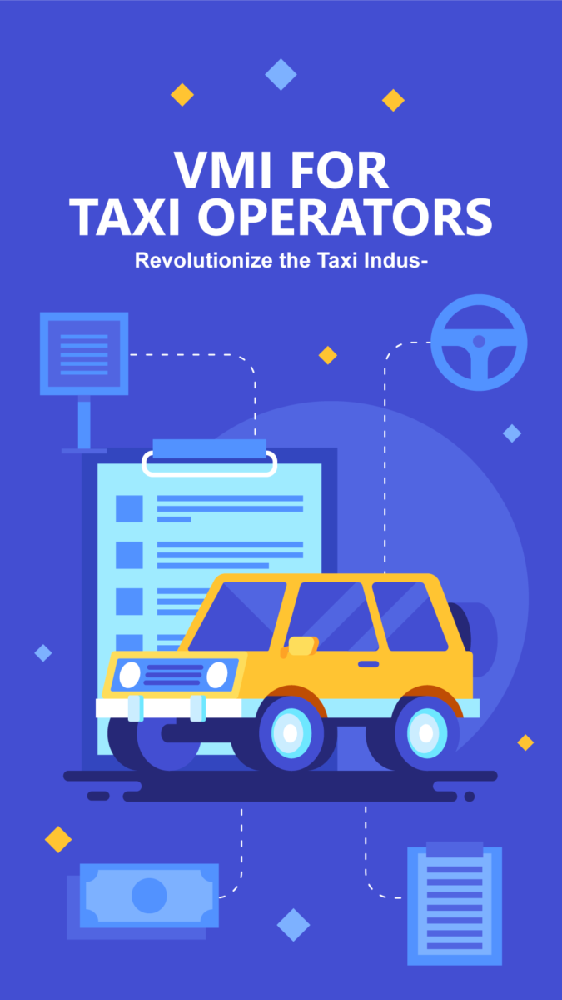

Vehicle Mobile Inspection for Taxi Operators
Vehicle Mobile Inspection for Taxi Operators
Inspect your vehicle before getting ready for the ride. Our Vehicle Mobile Inspection for Taxi operators lets you mark your ride requirements checklist before the ride.
We will explain why vehicle mobile inspection (VMI) will revolutionize the taxi industry. You’ll find this material essential whether you’re a seasoned pro in the field or someone who occasionally hails a cab.
Entering the Mobile Inspection Era
The adoption of mobile inspection technology represents a significant advancement in the development of taxi operations. The days of long and tiring manual inspections are over. Operators can now use digital technologies to complete the assessment process efficiently and precisely.
Streamlining Operations
One of their most obvious advantages is conducting mobile inspections with greater operational efficiency. Review turnaround time is significantly shortened because of the ability to conduct assessments on the fly. This results in less downtime for taxis, which eventually increases passenger availability. Consider a situation where vehicles are quickly inspected, fixed, and returned to the road to maximize operators’ potential earnings.

Enhanced Safety Measures
Any taxi operator must put the safety of both drivers and passengers first. Mobile inspections are an extremely effective ally in this effort. Operators can reduce the risk of unexpected failures or accidents by quickly recognizing and resolving any issues, ensuring their vehicles are in optimal condition.
Cost savings and resource allocation
Mobile inspection technology significantly decreases administrative overhead and operational efficiency improvements. Manual inspections take up time and resources that may be used for other important parts of the business. Operators now have more options to improve their businesses, including extending services or investing in vehicle maintenance.
Real-time Reporting and Compliance
The speed of mobile inspections is a game-changer for maintaining safety standards and regulatory compliance. Real-time reporting ensures that problems are dealt with immediately, preventing safety dangers. Operators can also keep track of and retain compliance documents, giving regulatory authorities a smooth audit trail.
Adapting to the Future
Adopting mobile vehicle inspections is more than just a technology advance for taxi companies; it’s a calculated step towards a safer, more effective future. The advantages are not limited to the balance sheet. They appeal to drivers who deserve to operate cars in top condition and passengers who need reliable and safe transportation alternatives.
Conclusion
As mobile inspection technology develops, taxi operators must take advantage of the chance to improve their operations and prioritize safety through vehicle mobile inspections. The future is lined with success, safety, and effectiveness. By embracing this disruptive technology, operators are protecting their companies and creating a safer, more dependable urban transportation ecosystem for everyone. Taxi operations are moving toward a mobile future.